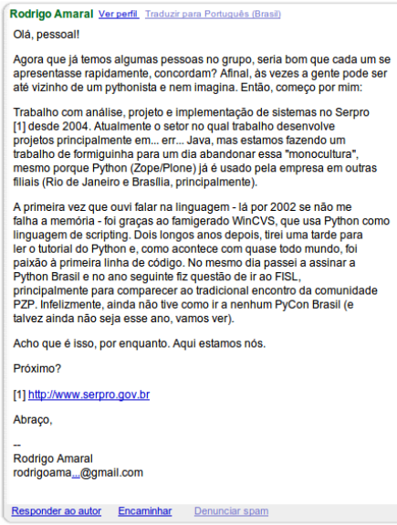

E o que danado é o PUG-PE?
Fernando Rocha, Gileno Alves e Renato Oliveira
Sobre essa palestra
- Apresentação
- Software Livre
- Python (Por que a gente gosta de python?)
- Comunidades Open-Source
- Motivação de quem trabalha com opensource
- História do PUG-PE
- E o futuro?
- PythonBrasil[8]
- Desafios para o futuro
- Terminar o que a gente começa!
- Fomentar comunidades python no Nordeste
- PythonBrasil[?] em recife!
Quem somos
Fernando Rocha
fernandogrd@gmail.com | @fernandogrd
Gileno Filho
gascf.cin@gmail.com | @gilenofilho
Renato Oliveira
renatooliveira.cin@gmail.com | @_renatooliveira
Software Livre
“Free software” means software that respects users' freedom and community. Roughly, the users have the freedom to run, copy, distribute, study, change and improve the software. With these freedoms, the users (both individually and collectively) control the program and what it does for them.
http://www.gnu.org/philosophy/free-sw.html
E Python é software livre?
É
E o que isso quer dizer?
Python - Software Livre e Código Aberto
-
Você pode usar
-
Distribuir
-
Estudar seu código
-
Modificar
-
Desenvolver novas funcionalidades
-
Comunidade bastante ativa
E por que nós gostamos tanto de python?
print "Hello World!"
Sem duvidas depois de um hello world em python é que nem a pilula azul de matrix
Marcel Caraciolo, PUG-PE
E por que nós gostamos tanto de python?
- Sintaxe limpa
- Fácil de fazer coisas complicadas
- Biblioteca nativa poderosa
- Python Package Index com 23948 pacotes!
- É diverdido
Comunidades de software livre
Comunidade é um grupo de pesssoas que interagem e compartilham um mesmo conjunto de valores
Henrique Bastos
E por que nós fazemos parte de comunidades Software Livre?
- Troca de informação
- Existem outros nerds como você, que gostam das mesmas coisas que você
- Comunidade bem sucedida é formada por usuários bem sucedidos
- Networking
- Networking
- Networking
Primeiro e-mail do PUG-PE

Primeiro e-mail de Marcel (Moderador)
PythonBrasil[8]
- O que é a Python Brasil?
- Quem vai?
- Caravana